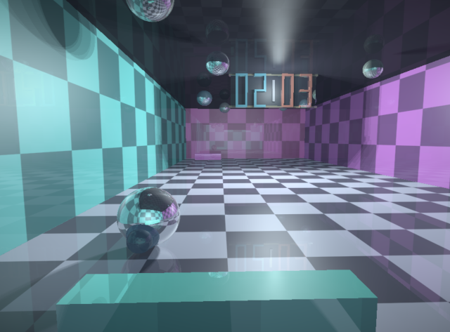

Raytraced Pong

A real-time raytraced Pong court rendered with a fragment shader on WebGL (OpenGL ES 2.0), or with the software raytracer (F8 switches). Built to WebAssembly with Emscripten and packaged with Nix.
Play KugelMatch (WASM)Built from the same source as the browser version, version @version@.
kugelmatch.exe. Windows 7 and later.
GPU raytracer by default; --cpu for the software path.
--scale auto --fps 30
defaults. For ArkOS and alike (aarch64): put the zip into
ports/PortMaster/autoinstall/ and start PortMaster, or unpack it to
/roms/ports/.
nix run github:Grumbel/kugelmatch)
or CMake and SDL2.
Table tennis on a mirrored court, lit by a soft shadow and bounced reflections — drawn every frame by a raytracer, not by meshes. Written in C++17 with SDL2, with two backends that draw the same scene: a CPU raytracer and an OpenGL ES 2.0 fragment-shader raytracer (desktop GL, WebGL, Android, R36S). Sound is synthesised on the fly; there are no image or audio asset packs to ship.
Game controllers work through SDL’s game-controller API. On the R36S, Select+Start quits (gptokeyb).